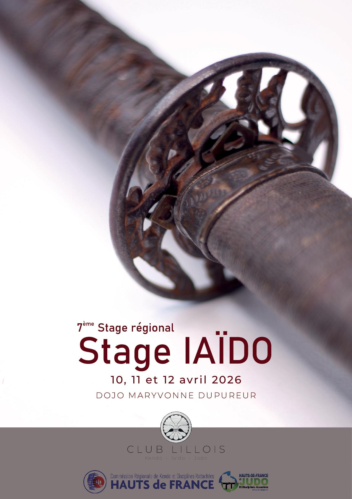
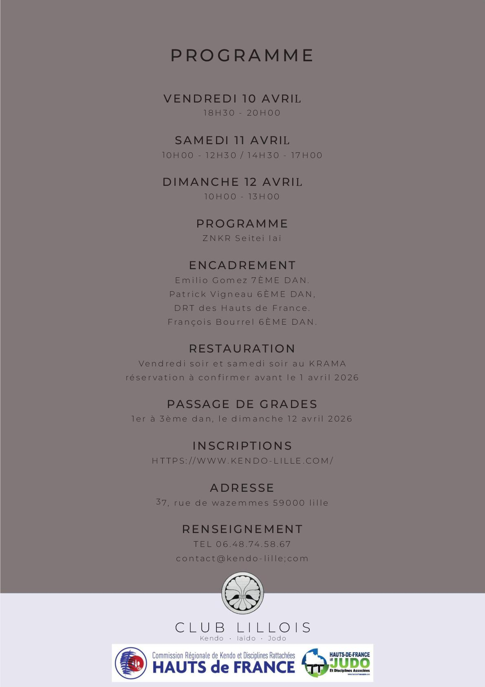
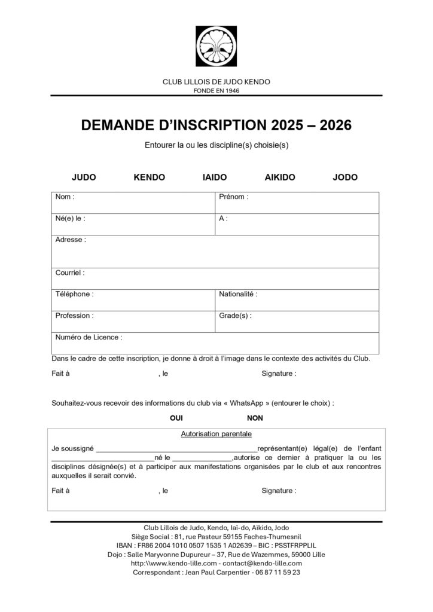
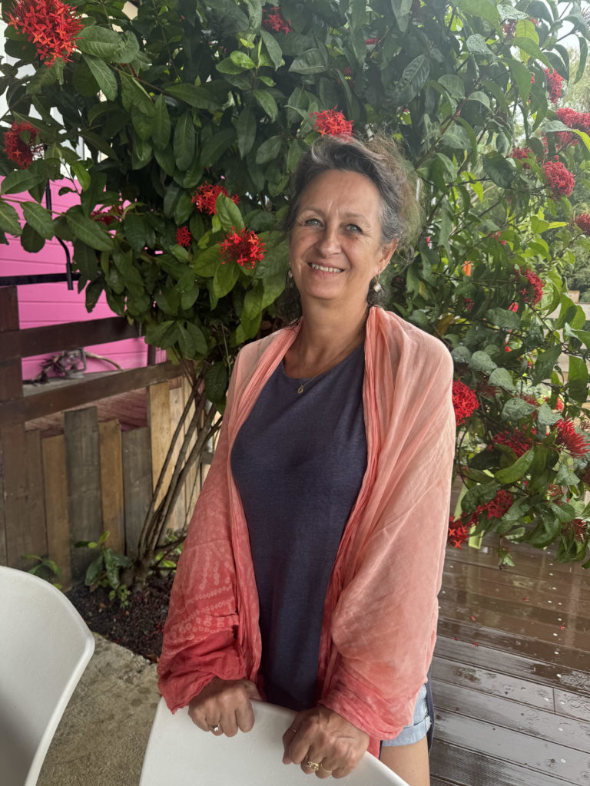
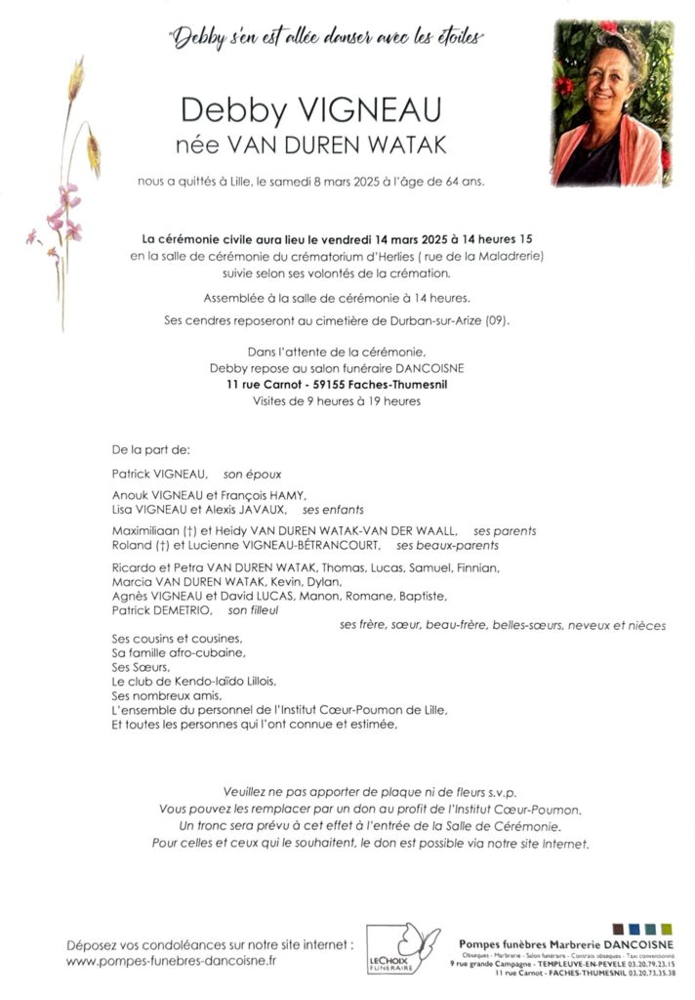
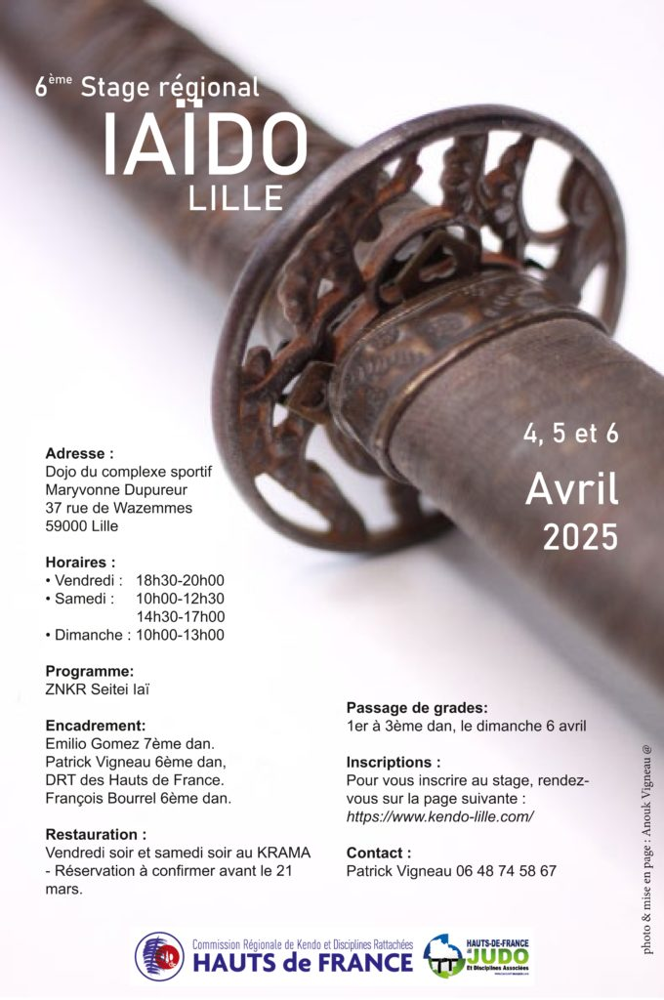

Fiche d’inscription en version pdf dans le lien ci-dessous :
Mesdames, Messieurs,
Samedi 8 mars, ironie du sort, au moment de la journée internationale des droits des de la femme, madame VIGNEAU Debby, née VAN DUREN WATAK, nous a quittés pour s’en aller danser avec les étoiles du firmament…
Beaucoup l’ont connue, vive et lumineuse, gaie et engagée, au côté de son époux, Patrick, auprès de ses enfants, Anouk et Lisa, auprès de ses nombreux amis de la danse, des Arts Martiaux, et plein d’autres encore à divers titres, qui ne manqueront pas de se reconnaitre.
Pour nombre de pratiquants de Iaïdo, de Kendo, de Kinomichi, elle était celle qui réparait nos matériels endommagés, confectionnait nos vestes, sous-vestes et accessoires et autres fantaisies dans des tissus les plus beaux et chatoyants, avec soin et maitrise de l’Art de la couture et de la confection…
Ce sont des heures et des heures de travail soignées réalisées dans l’intimité de son atelier pour rendre à chacun son équipement restauré, sa commande honorée, au plus près de nos exigences et vœux, afin de nous satisfaire pleinement.
A cela, il me faut ajouter ses multiples invitations à partager, sous de nombreux et divers prétextes, des repas élaborés avec passion et ferveur, afin de nous faire découvrir et partager la nourriture indonésienne dont, par héritage familial, elle avait hérité et qu’elle souhaitait exalter pour le bonheur de nos papilles, certes, pour la joie des rencontres et des échanges en convivialité au sein de sa famille, au cœur de son univers personnel.
Là encore, si vous saviez, le temps consacré aux courses aux préparations et cuissons, aux recherches des produits rares et fins, vous seriez ébahis!
Cette générosité se manifestait sans recherche de mise en valeur, dans l’humilité et la simplicité qui permettent dès lors de vraies rencontres, sincères et chaleureuses, habitées et animées par le respect dû à chacun!
Cette formule d’Emanuel LEVINAS: « l’Autre m’oblige! » elle la faisait sienne par son activité, son dévouement, son courage.
Bien sûr qu’elle avait un caractère bien trempé, il est vrai, mais pas du tout nourri par la haine ou les colères, mais plutôt par les déceptions, les manquements au respect et à la reconnaissance, les injustices et les fautes d’éducation les plus élémentaires.
Ainsi, avions nous affaire à quelqu’un d’entier mais une personnalité franche et loyale, courageuse et déterminée, toujours prête à vouloir s’améliorer afin de tendre vers cet être vertueux auquel elle aspirait, celui empreint de Sagesse et de Joie.
Puissiez vous ne garder que les meilleurs souvenirs, ceux des rires, ceux des sens éveillés par ses chants, ses danses, ses plats cuisinés, ses objets confectionnés...et balancer les mauvais, s’il y en a…
A y regarder de près, il n’y pas grand-chose à jeter.
A ses pauvres poules, à ses pauvres chats, désolé, il n’y aura rien à se mettre dans le bec et sous la dent.


Bonjour à tous,
nous sommes heureux de vous annoncer le 6ème Stage Régional de Iaïdo: Inscription
